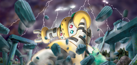
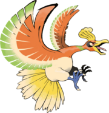

Con el mundo creado, pero aún inhabitable, nacieron Kyogre, Groudon y Rayquaza quienes crearon los océanos (ríos, lagos y demás fuentes de agua), la tierra (continentes, islas y demás masas de tierra firme) y el cielo (viento, nubes y cambios de climas) respectivamente. Dado que el mundo es limitado, pronto se llenó por océanos y tierra, y al no quedar más espacio, Groudon y Kyogre (En sus formas Primigenias) se pelearon por conquistar el planeta. Como estos dos Pokémon eran muy fuertes, y podían llegar a destruir el planeta, Rayquaza, el más poderoso de los tres y dueño de los cielos, decidió solucionar el conflicto él mismo, bajando desde la capa de ozono desde donde nadie sabía de su existencia y venciendolos a ambos en un combate que provocaría que éstos perdieran sus formas Primitivas, estos se fueron a descansar en un largo sueño, uno al interior de las montañas y otro al fondo del océano (actualmente ambos se encuentran despiertos pero ya no pelean por expandir sus territorios).
Una vez el mundo asentó sus bases gracias a estos Pokémon, nació Xerneas, que se encargó de crear la vida. De ahí nació la naturaleza y comenzaron a existir los primeros seres vivos. Fue entonces cuando Yveltal llegó al mundo para generar la muerte, y para balancear la vida y la muerte nació Zygarde, encargado de mantener en balance la naturaleza y así comenzar el ciclo de la vida.
Más tarde para hacer más habitable al mundo creó a tres seres vivos, que éstos serían Azelf, Mesprit, Uxie, que harían surgir los sentimientos en el mundo. Con la voluntad, las emociones y la sabiduría se crearían más tarde los humanos, que con estos sentimientos adquirirían un poco más de inteligencia para vivir en paz y armonía con los Pokémon.
Regirock, Regice, Registeel, Regigigas, Mew, Manaphy, Phione, Shaymin y Celebi |
|
|  | Luego de un tiempo se cuenta que nacio Regigigas y se dice que creo a los titanes legendarios de roca, hielo y acero a partir de arcilla, hielo especial de montaña y magma endurecido. Regigigas arrastro los continentes, tirando de ellos con su gran poder para después descansar (generalmente en un templo), de tal manera que sólo se despertarán cuando los tres titanes legendarios, Regirock, Registeel y Regice estén frente a él y lo "invoquen", en caso de que el mundo esté en peligro.Posteriormente nacería el Pokémon Desconocido Mew, el cual poseía el ADN de la mayoría de los Pokémon Existentes, el cual vivía como una población de millones de individuos. Posteriormente en el frío fondo marino nació Manaphy, que nadó grandes distancias para regresar a su lugar de origen (el Templo del mar) donde cuida de los océanos (ya que Kyogre se encuentra dormido), y a sus Pokémon habitantes, aunque en ese tiempo eran muy pocos, pues sólo había Omanyte, Omastar, Kabuto, Kabutops, Lileep, Cradily, Relicanth, Tirtouga, Carracosta y algunos Magikarp y Gyarados gigantes. Como era una tarea muy extenuante, Kyogre le permitió a Manaphy procrear muchos Phione para que lo ayudaran en esta labor (actualmente Kyogre y la gente del mar cuidan a Manaphy y su templo). Si este Pokémon llegara a morir automáticamente aparecería un huevo en el fondo del mar donde nacería otro Manaphy para volver a cumplir con su ciclo. En tierra firme nacieron varios Shaymin quienes se encargarían de purificar el medio ambiente usando fogonazo que consiste en disolver las toxinas del aire para transformar tierra yerma en campos de flores. Más tarde nacieron otros Pokémon con habilidades similares; los Celebi, nacidos de los árboles, con el don de poder viajar en el tiempo, conocidos como los guardianes del bosque. Mientras ellos vivan podrán hacer crecer los árboles y las plantas, lo que permitiría que varios Pokémon antiguos abandonaran los océanos y colonizaran la tierra, dando paso a nuevos Pokémon y evoluciones como Aerodactyl, Anorith, Armaldo, Cranidos, Rampardos, Shieldon, Bastiodon, Archen, Archeops, Tyrunt, Tyrantrum, Amaura y Aurorus. Así pasaron millones de años y junto con los Pokémon evolucionaron los humanos, con quienes convivieron y habitaron con ellos. |
Ho-Oh, Lugia, Entei, Suicune, Raikou, Articuno, Zapdos y Moltres |
|
|  | Cuenta la leyenda que este Pokémon (Ho-Oh) vuela por el cielo con sus magníficas alas. |
La leyenda continúa, y cuenta que una vez creados los Pokémon y sus mundos, Arceus se trasladó a su propia dimensión, donde descansa para recuperar el poder perdido por la creación, aunque puede ser invocado en un lugar llamado Sala del Origen, en lo más alto de unas ruinas del Monte Corona, y sólo saldría cuando el universo corriese grave peligro. En el pasado este despierta de su reposo para salvar a la Tierra de un gran meteorito que se acerca a gran velocidad para impactarla, al hacer esto se debilita porque pierde muchas de sus tablas, pero Damos le ayuda a encontrarlas otorgandole en agradecimiento la esfera de la vida, después vuelve de nuevo a su dimensión a descansar.
A Arceus le gusta descansar en soledad, aislado de toda forma de vida, de espacio y de tiempo. También se dice que Arceus entiende todo tipo de idioma Pokémon y además el lenguaje humano (por medio de telepatía). Otras leyendas hablan sobre un misterioso objeto llamado flauta azur. Cuentan que tiene el poder de invocar unas escaleras de cristal hacia la Sala del Origen (donde se encuentra Arceus), seguramente hecha por alguna antiquísima civilización que ya conocía la existencia de Arceus.
Esto también podría ser al contrario, ya que el Trío dragón (Dialga, Palkia y Giratina) parece ser creado también por Arceus, así que Mew no podría tener sus genes, a menos que fuera su hijo, pero también se puede dar el caso que Mew no sea el hijo de Arceus si no por el contrario, su padre, esto explicaría porque Mew es el "antecesor de todos los pokémon" y que tenga el ADN de todos, ya que el huevo de donde nació Arceus pudo haber sido puesto por Mew, y como su hijo, Arceus tiene todo el ADN de Mew y los Pokémon creados por Arceus tendrían dicho ADN por consiguiente. Cabe decir que esto es algo teórico y que todavía no existe una realidad confirmada de cuál fue primero.
Otra opinión, es el hecho de que siendo Arceus el creador Pokémon, de la misma manera que la teoría creacionista humana, Mew sería creación magistral de Arceus, siendo el reflejo de su poder de "transformación" al poder aprender todos los poderes de los Pokémon y entonces bajo esta idea, Mew sería el antecesor de todos los Pokémon excepto de su creador, ya que la creación no puede superar al creador, pero si imitarlo (transformación-aprendizaje). De esta manera, la controversia podría ser resuelta. Después de estas dudas, se creyó que Mew sólo existe para vigilar el universo en el lugar de Arceus mientras éste reposa.
Además, la leyenda de Arceus también guarda cierto parecido con el Génesis del antiguo testamento de la Biblia, donde se pueden leer claramente "ciertas" coincidencias, y posee gran parecido con las historias del Olimpo griego, así como de la mitología japonesa, la cual también incluye un "dios creador" nacido de un huevo que se encontraba en medio del caos, puesto que no había universo aún.
Desde otro punto de vista se pueden entender estas contradicciones si se tiene en cuenta el factor de las "creencias humanas", pero para el mundo Pokémon; como pasa en nuestro mundo; por ejemplo, por mucho tiempo se pensó que la tierra estaba sobre dos tortugas, luego que era plana y luego que era redonda, hasta que por fin sabemos que es una esfera achatada por los polos, así podríamos explicar que en cada área del mundo Pokémon se tiene una idea distinta de qué hace cada Pokémon, o de dónde vinieron, incluso las leyendas que le rodean pueden ser diferentes porque no se han comprobado en el mismo mundo Pokémon, como era el caso de los huevos Pokémon.
Las religiones de nuestro mundo por ejemplo, explican la creación del universo de diferentes maneras, así es probable que en el mundo Pokémon suceda también.
Según lo dicho por Helio la vida se originó en el monte Corona, eso corroboraría la leyenda de Arceus, pero cabe destacar que todo esto sólo son puras leyendas y mitos, nunca se logró demostrar nada, así que puede variar de un lugar a otro, pudiendo ser todo esto mentira y que cada Pokémon legendario tiene una creación distinta independiente del otro. Además según Cintia el mundo fue creado por Arceus en el Estrado Mistrío, en las Ruinas de Sinjoh.
Cabe pensar que son leyendas de civilizaciones muy antiguas que conocían a Arceus y a los Pokémon legendarios.